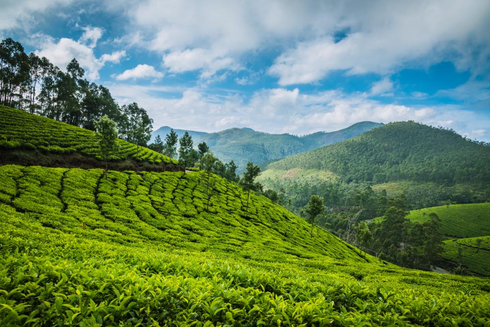
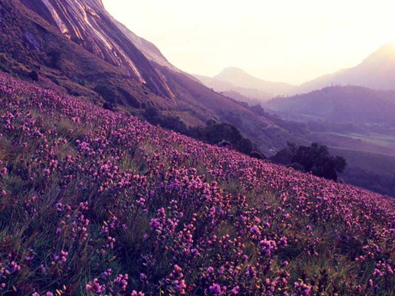
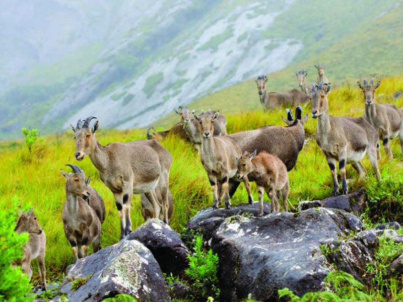

Sitting at an elevation of over 1,500 metres, the breath-taking hill station -Munnar, features a brilliant low mountain scenery, complete with an awe-inspiring
veil of cloudy mist, giving you just the surreal experience you have been craving for.
How to reach there?
Munnar is a town in the Western Ghats mountain range in India’s Kerala state.
And reaching here is not a difficult task, with comfortable services via air, rail, sail and
road leading all to Kochi, you can hire a ride uphill to Munnar in no time.
The nearest airport is Cochin International Airport, which is around 125 kms away from Munnar and the nearest railway station is located in Kochi or Ernakulam.
Top things to do?
Munnar is the ultimate destination for a peaceful and rejuvenating retreat in the hills.
The most striking feature about Munnar is that it lies in the convergence of the three rivers Kundaly, Madhurapuzha and Nallathanni.
Munnar is bliss for adventure enthusiasts and fitness freaks, especially trekkers. Trekking till high elevations like Echo Point and
Top Station is one of the most preferred things to do in Munnar.
Even cycling enthusiasts have a chance to rejoice in the tea estate areas of Munnar.


